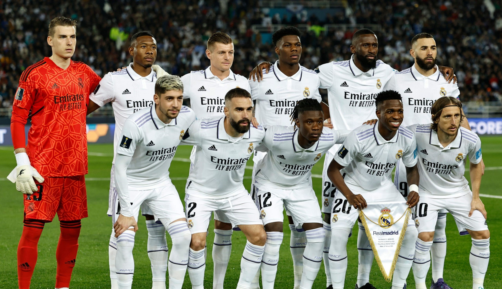
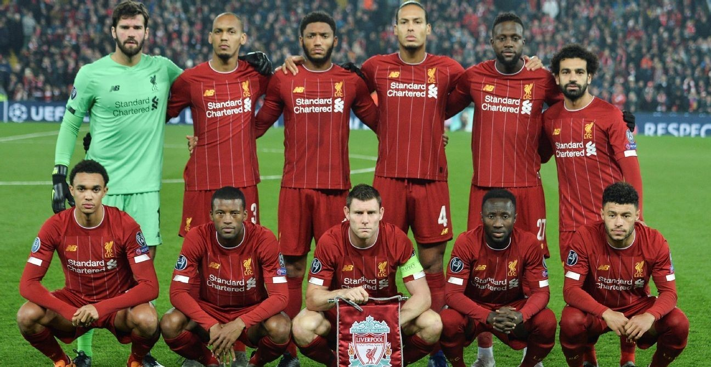
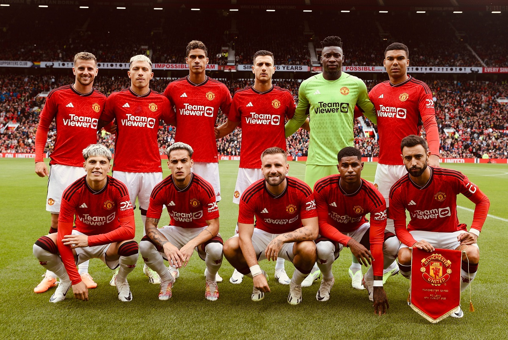
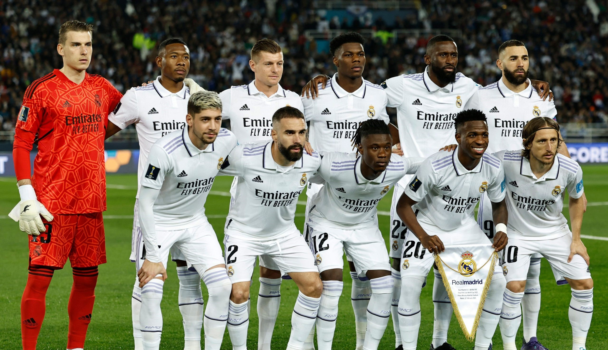
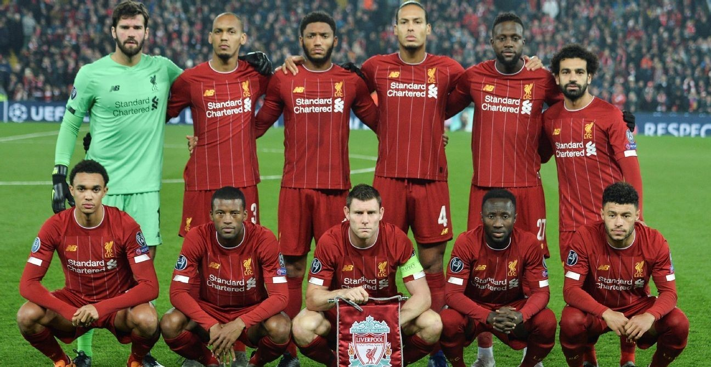
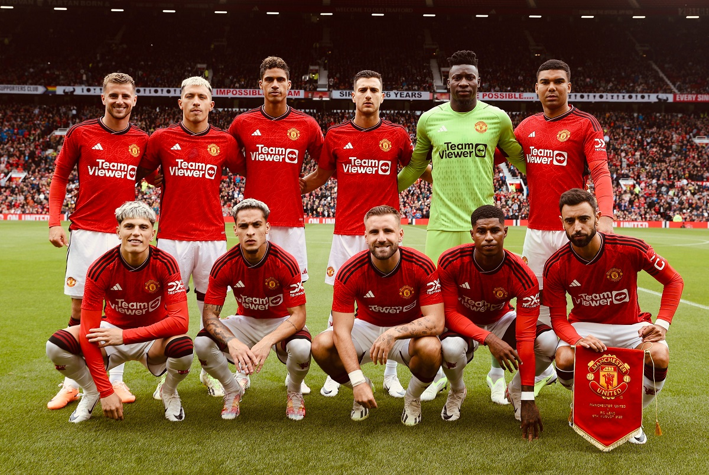

Athletico Paranaense
O Club Athletico Paranaense, popularmente conhecido como Athletico-PR ou Furacão, é um dos principais clubes de futebol do Brasil, com sede na cidade de Curitiba, Paraná. Fundado em 26 de março de 1924, o clube possui uma rica história e uma apaixonada torcida.
Atletico de Madrid
O Atlético de Madrid é um dos clubes de futebol mais tradicionais e apaixonantes da Espanha. Fundado em 1903, o clube madrilenho possui uma rica história marcada por grandes feitos e uma legião de torcedores apaixonados.!
Borussia Dortmund
O Borussia Dortmund, conhecido carinhosamente como BVB, é um dos clubes de futebol mais populares e tradicionais da Alemanha. Fundado em 1909, na cidade de Dortmund
Al-Nassr
O Al-Nassr é um dos clubes de futebol mais populares e bem-sucedidos da Arábia Saudita, com sede na capital, Riad. Fundado em 1955, o clube conquistou diversos títulos ao longo de sua história.
Real Madrid
O Real Madrid é um dos clubes de futebol mais famosos e bem-sucedidos do mundo, com sede em Madrid, Espanha. Fundado em 1902, o clube possui uma rica história marcada por grandes feitos e uma legião de torcedores apaixonados em todo o globo.
Liverpool
O Liverpool Football Club é um dos clubes de futebol mais históricos e apaixonantes do mundo, com sede em Liverpool, Inglaterra. Fundado em 1892,
Manchester United
O Manchester United é um dos clubes de futebol mais famosos e bem-sucedidos do mundo, com sede em Manchester, Inglaterra. Fundado em 1878